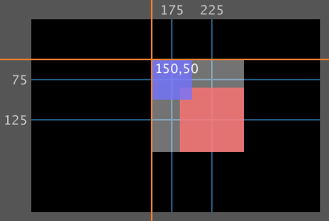

Group Programming
In Solar2D, display groups are the standard way to organize objects hierarchically.
Overview
Understanding display groups is essential to building apps in Solar2D. A display group is a special kind of display object which can contain other display objects and even other display groups. Imagine it as a blank sheet of paper on which you “draw” images, text, shapes, and animated sprites.
In app development within Solar2D, it’s important to note that display groups are not limited by the screen boundaries. In fact, display groups are boundless and span to infinity in all directions — the physical screen edges simply frame a portion of the stage. In Solar2D, the stage can be considered the parent display group, and new display groups that you create are automatically added as child groups of it.
Coordinate System
All display groups, including the stage, revolve around a coordinate system. Any visual object that you place on the screen will have an x and y coordinate indicating its horizontal and vertical position respectively.
In Solar2D, the default origin of display groups is 0,0 which is located at the 0,0 point, positive x values extend to the right, while positive y values extend downward (not upward as in the Cartesian coordinate system). Negative coordinates are allowed as well, but as you can see in the diagram below, they will not reside within the portion of the group which is visible on the screen (the black region). Groups can, however, be moved to adjust their origin point — see Group Transforms below for more information.

Drawing Model
The “blank sheet of paper” analogy is useful for understanding Solar2D’s drawing model. Just as if you’re drawing figures on a sheet of paper, Solar2D display objects that are placed in a display group become part of that group (the paper).
Display objects that are not placed into a specific group become part of the stage, but in the process of developing an app, you will usually create several display groups in a specific layered order. You can imagine this as a “stack of paper” with each display group representing one sheet in the stack. For example, assume that you want to mimic a “landscape painting” with three layers (three display groups) as follows:
- far background — contains sky, clouds, etc.
- near background — contains background mountains
- foreground — contains trees, grass, rocks, etc.
Each of these display groups would, in turn, contain the appropriate display objects, thus composing the painting in the proper layered order. Of course, while each layer represents a sheet of paper in the analogy, you can’t actually see the “paper” itself — just imagine them as transparent sheets on which you place text, images, etc.
Creating Groups
Creating a new display group is as simple as the following:
local myGroup = display.newGroup()
This creates a new display group, assigned to the local variable myGroup. You can then add display objects to it:
local myGroup = display.newGroup() --Create a rectangle local rect = display.newRect( 0, 0, 40, 40 ) --Insert it into 'myGroup' myGroup:insert( rect )
Many display object APIs also accept the group as an inline parameter. See the Display Objects guide for
local myGroup = display.newGroup() --Create a rectangle and insert it into 'myGroup' local rect = display.newRect( myGroup, 0, 0, 40, 40 )
Group Hierarchy
You should create display groups in a specific order. In respect to your code, the first declared group will actually reside behind the next group in visually layered order. For example, to create the “landscape painting” discussed above, declare the three display groups as follows:
local farBackground = display.newGroup() local nearBackground = display.newGroup() --this will overlay 'farBackground' local foreground = display.newGroup() --and this will overlay 'nearBackground'
Although display groups are essentially tables, Lua library functions like table.insert() and ipairs() are not compatible with groups. In addition, you cannot get the number of children in a display group using #myGroup. Instead, use myGroup.numChildren.
Removing Groups
Groups can be removed via the display.remove() or object:removeSelf() functions. When you do so, all children in the group will be removed as well. However, you must still manually remove variables or other references associated with these children, otherwise they will not be freed from memory. For more details, see the Display Objects guide.
local myGroup = display.newGroup() --Create 2 rectangles and insert them into 'myGroup' local rect1 = display.newRect( myGroup, 0, 0, 40, 40 ) local rect2 = display.newRect( myGroup, 30, 30, 60, 60 ) myGroup:removeSelf() --OR display.remove( myGroup ) myGroup = nil
Child Properties
When you modify a group’s properties, all of its children are affected. For example, if you set the alpha property on a display group, each child’s alpha value is multiplied by the new alpha of the group. Groups automatically detect when a child’s properties have changed (position, rotation, etc.). Thus, on the next render pass, the child will

Group Transforms
Group transforms are applied hierarchically to the group’s children. The child’s transform is applied first, followed by the transform of its parent, followed by each ancestor, all the way to the stage. Consequently, children in a group are positioned relative to the parent group’s position. When you modify the transform of a group (move/scale/rotate) it affects the transform of the children.
In the image below, the black region indicates a theoretical Solar2D content area (in landscape orientation) and the intersection of the orange lines indicates the origin of the group. Note that this origin always defaults to 0,0
For testing, a red vector object has been drawn at 100,100 which signifies its center position since display objects have a default center anchor.
local myGroup = display.newGroup() local myBox = display.newRect( 100, 100, 80, 80 ) myBox:setFillColor( 1, 0, 0, 0.8 ) myGroup:insert( myBox )

If you move (transform) the group to a new x and y position, its origin moves to that point:
myGroup.x = 50 myGroup.y = 50

Notice that the red box moves along with the group (its parent). However, the object’s inherent x and y position does not change — it remains at 100,100 even though the box appears at a content position of 150,150. This is because Solar2D manages the position of display objects in relation to their parent group.
To get the actual position of an object in content coordinates, regardless of a moved/scaled/rotated group, use the object:localToContent() function:
local actualBoxX, actualBoxY = myBox:localToContent( 0,0 ) print( actualBoxX, actualBoxY )
Group Anchors
For a normal display object — an image or vector shape, for example — its anchor controls how its geometry is positioned relative to its origin. When you change the anchor of a normal display object, its origin does not change. Instead, its geometry moves relative to its origin. See the Transforms and Anchors guide for more information.
In contrast, display groups do not respect anchors by default. This is because display groups, on basic principle, are boundless and span to infinity in all directions. They do, however, possess an x and y position which defaults to 0,0
Optionally, anchors can be used on display groups. To demonstrate this method, another display object should be added to the example outlined in the Group Transforms section above:
local myGroup = display.newGroup() local myBox = display.newRect( 100, 100, 80, 80 ) myBox:setFillColor( 1, 0, 0, 0.8 ) myGroup:insert( myBox ) myGroup.x = 50 myGroup.y = 50 --Add a smaller blue box local blueBox = display.newRect( 50, 50, 50, 50 ) blueBox:setFillColor( 0, 0, 1, 0.8 ) myGroup:insert( blueBox )

Now, set the group’s anchor to the top-left (anchorX and anchorY both set to 0):
myGroup.anchorX = 0 myGroup.anchorY = 0
If you refresh the project, no visual change will be apparent because, by default, display groups do not respect anchors. However, you can achieve anchor behavior on a display group by setting its anchorChildren property to true.
Before exploring how the anchorChildren property works, inspect the theoretical bounding box (opaque white) in the following image — this box will be used as a visual aid for understanding anchors on groups. Note that the bounding box takes into account the maximum top, right, bottom, and left points of all display objects in the group:

Now, set the anchorChildren property to true:
myGroup.anchorChildren = true

Note that the entire group bounds move to the current origin of the group (50,50 as declared earlier). Because the anchor of the group is set to 0,0
If the entire group origin is moved, the objects will move with it as expected:
myGroup.x = 150

If the anchor is reset to top-right (1,0), the group repositions over the current origin at 150,50:
myGroup.anchorX = 1 myGroup.anchorY = 0

In essence, when a display group’s anchorChildren property is set to true, the children are all offset by the same amount. That offset is calculated in regards to the bounding box for all children in the group. Effectively, the children are treated as if they’re a single unit, and the group’s origin is the anchor of that unit.
An alternative to using anchorChildren is to place the group inside another group (“parent group”). Changing the position, rotation, or scale of this parent group will produce similar behavior.
Containers
A special type of group called a container can limit the boundaries of the group to a
Offscreen Culling
Solar2D will cull child objects that are outside the boundaries of the screen.